설치와 첫 프로젝트
이 강좌는 Rust를 처음 만지는 사람이 빈 화면에서 시작해 트레이트와 제네릭까지 직접 코드를 치며 따라가게 짜여 있어요. 화면은 처음부터 끝까지 Windows의 PowerShell과 RustRover 편집기예요.
rustup으로 한 번에 설치해요
설치는 rustup.rs에서 시작해요. 페이지 가운데에 Windows용 rustup-init.exe 링크가 있고, 그 아래에 'Visual Studio prerequisites'가 필요할 수 있다는 안내가 작게 붙어 있어요. 발표자는 실행 파일 대신 페이지 맨 아래의 curl ... | sh 명령을 복사해 PowerShell에 붙여 넣는 CLI(Command Line Interface) 방식을 골랐어요. 설치 중 선택지가 나오면 기본 설치(1번)를 고르면 돼요.
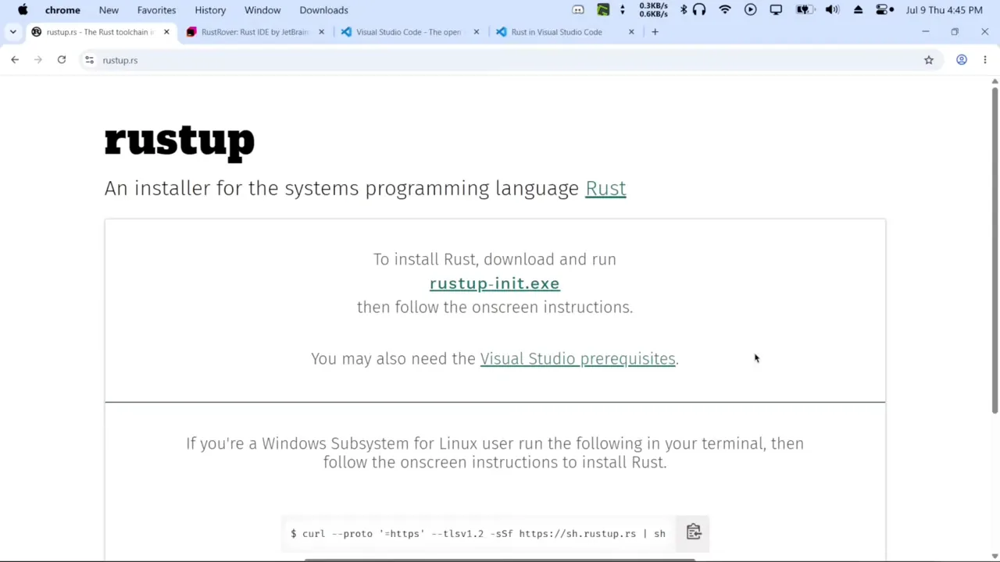
설치가 끝나면 새 PowerShell을 열고 버전을 확인해요. 화면에는 rustc 1.96.1과 cargo 1.96.1이 찍혀 있어요. 이 명령 하나로 컴파일러 rustc와 빌드·패키지 도구 cargo가 같이 깔린 거예요. 설치가 rustfmt 단계에서 멈춰 보이면 Ctrl+C로 끊고 새 터미널을 열면 된다고 해요.
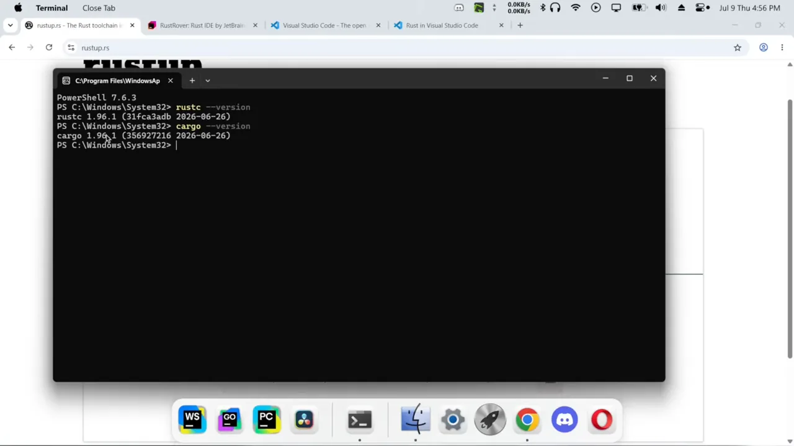
편집기와 첫 프로젝트
발표자가 쓰는 편집기는 JetBrains의 RustRover예요. 디버깅 기능이 많아 시간을 아껴 준다는 이유예요. VS Code를 쓰는 사람은 VS Code 공식 문서의 Rust 안내를 따라 확장을 설치하면 되고, 강좌 내내 터미널 명령도 함께 보여 준다고 해요.
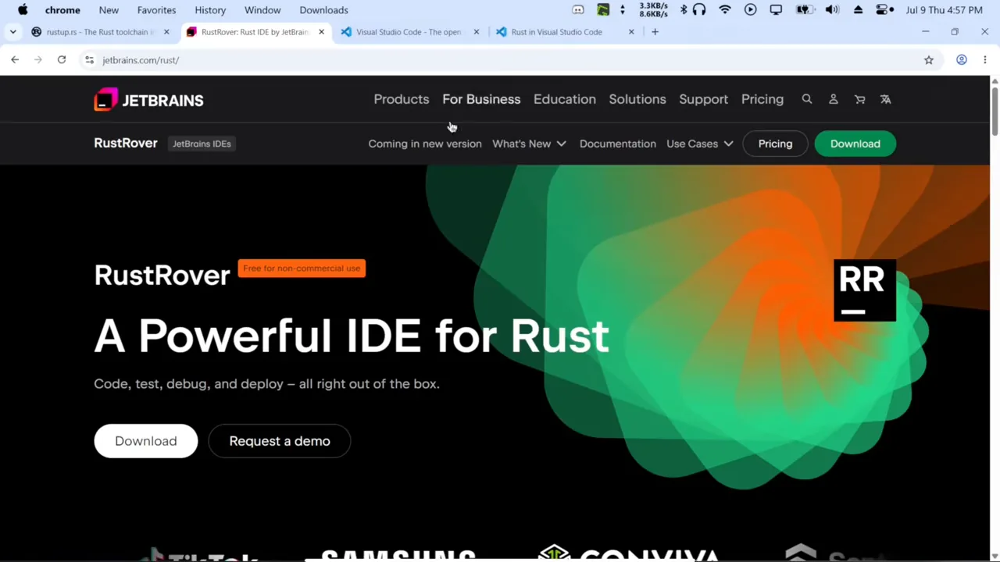
RustRover에서는 New Project에서 템플릿을 Binary로 두고 hello_rust를 만들어요. VS Code 쪽은 터미널에서 cargo new hello_rust를 치면 같은 뼈대가 생겨요. 왼쪽 파일 트리에서 볼 건 두 개예요. Cargo.toml은 프로젝트 이름과 버전, 그리고 나중에 추가할 외부 라이브러리를 적는 설정 파일이에요. Rust에서는 이 라이브러리를 크레이트라고 불러요. 코드는 src/main.rs에 있어요.
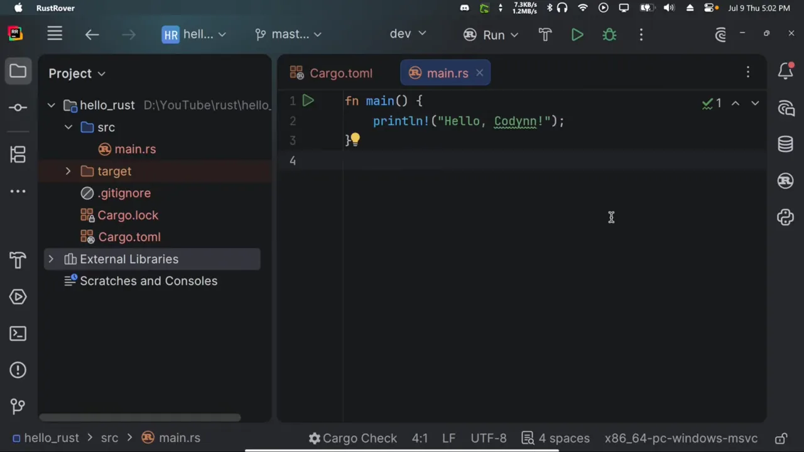
모든 Rust 프로그램은 fn main()에서 시작해요. println! 끝의 느낌표는 이게 평범한 함수가 아니라 매크로라는 표시예요. 발표자는 매크로를 '코드를 대신 써 주는 코드'라고 설명해요.
cargo run과 Windows의 함정
cargo run은 두 가지를 한 번에 해요. 코드를 컴파일하고, 이어서 실행해요. 그런데 Windows에서는 처음에 'Visual Studio 2017 이상이 설치돼 있는지 확인하라'는 메시지와 함께 컴파일이 실패할 수 있어요. 이때는 rustup.rs의 Visual Studio prerequisites 링크를 따라가 winget 명령으로 Visual Studio 설치 관리자를 띄우고, 'C++를 사용한 데스크톱 개발' 워크로드를 설치하면 돼요. 설치 뒤 새 터미널에서 다시 cargo run을 치면 'Hello Codynn'이 찍혀요.
변수는 기본이 불변이에요
Rust에서 가장 먼저 부딪히는 규칙은 '변수는 기본적으로 바꿀 수 없다'예요. 발표자는 일부러 이 규칙을 어겨 컴파일러가 뭐라고 하는지 보여 줘요.
불변을 어기면 컴파일이 멈춰요
let x = 5;로 만든 뒤 x = 6;을 쓰면 RustRover가 실행하기도 전에 빨간 밑줄을 그어요. 그래도 cargo run을 돌리면 아래 화면처럼 오류가 나요. 4번째 줄 x = 6 아래에 'cannot assign twice to immutable variable'이 붙고, 그 아래 help 줄이 let mut x = 5;로 고치라고 정답까지 알려 줘요.
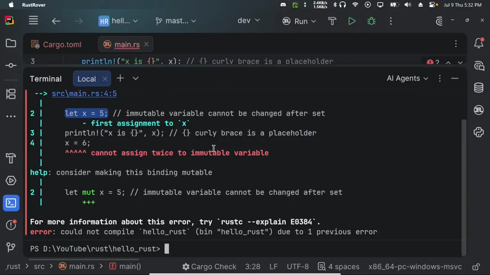
다른 언어라면 그냥 지나갔을 실수를 Rust는 컴파일 단계에서 잡아요. 컴파일러의 말은 '이 값이 바뀔 수 있다고 말한 적이 없잖아'예요. mut 키워드를 붙여 가변이라고 밝히면 x is 5, x is 6이 차례로 찍혀요.
상수는 타입이 필수예요
상수는 main 밖, 파일 맨 위에 써요. 화면 1번째 줄의 const MAX_POINTS: u32 = 100_000; 옆 주석이 규칙을 요약해요. 상수는 언제나 불변이라 mut를 붙일 수 없고, 타입을 반드시 적어야 해요. 타입은 이름 뒤에 콜론을 찍고 써요. 이름은 대문자와 밑줄로 쓰는 게 관례예요.
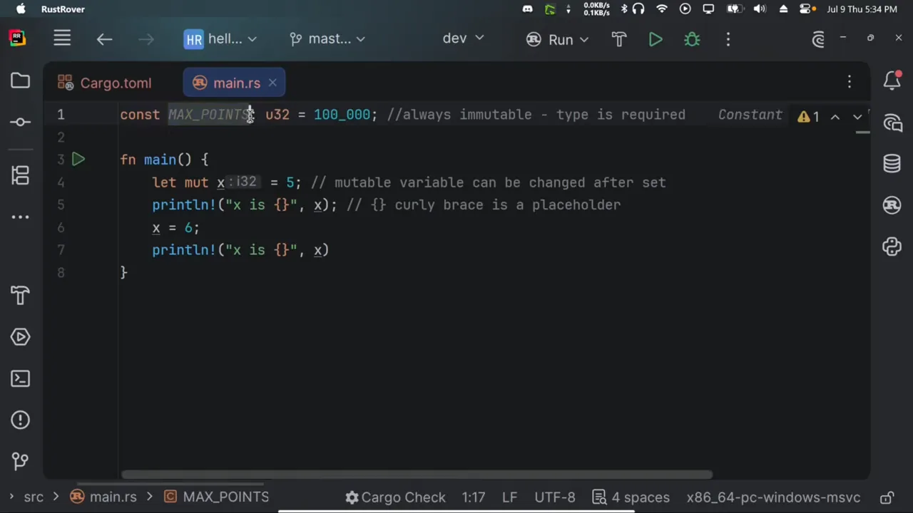
섀도잉: mut 없이 값을 바꾸는 또 다른 길
let y = 5; 다음에 let y = y + 1;, let y = y * 2;를 이어 쓰면 오류 없이 y가 바뀌어요. 같은 변수를 고친 게 아니라, 이전 값을 이용해 같은 이름의 새 변수를 만든 거예요. 이걸 섀도잉이라고 해요. 새 y가 생기는 순간 이전 y는 다시 쓸 수 없어요.
아래 실행 결과에서 위쪽 노란 경고는 MAX_POINTS를 선언만 하고 쓰지 않았다는 뜻이에요. 쓰지 않은 상수나 변수가 있으면 경고가 나지만 실행은 그대로 돼요. 맨 아래 네 줄이 실제 출력으로, y is 5 다음에 (5 + 1) × 2인 y is 12가 찍혔어요.
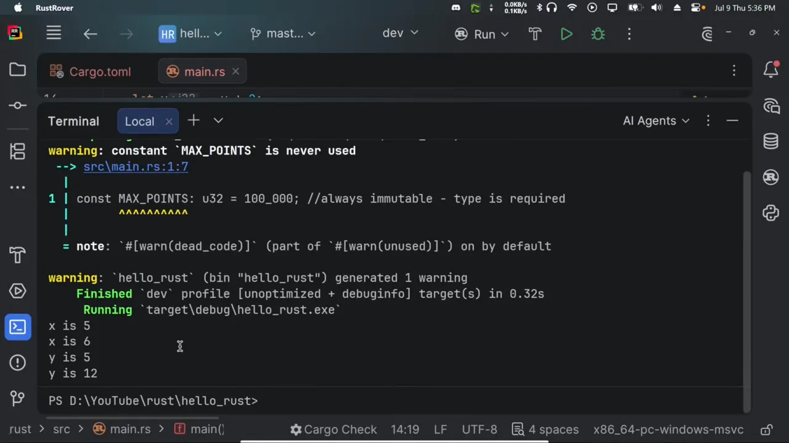
스칼라 타입과 복합 타입
Rust의 타입은 크게 두 갈래예요. 값 하나를 담는 스칼라 타입과, 여러 값을 하나로 묶는 복합 타입이에요. 문법은 늘 같아요. let 이름: 타입 = 값;이에요.
스칼라 타입 다섯 가지
아래 화면 3~8번째 줄에 강좌에서 쓰는 스칼라 타입이 한 줄씩 있고, 주석이 각 타입의 뜻이에요. 나이 18은 음수가 없는 u32, -100은 음수가 되는 i32, 체온 36.6은 소수인 f64, is_active는 bool, 학점 'A'는 글자 하나인 char예요.
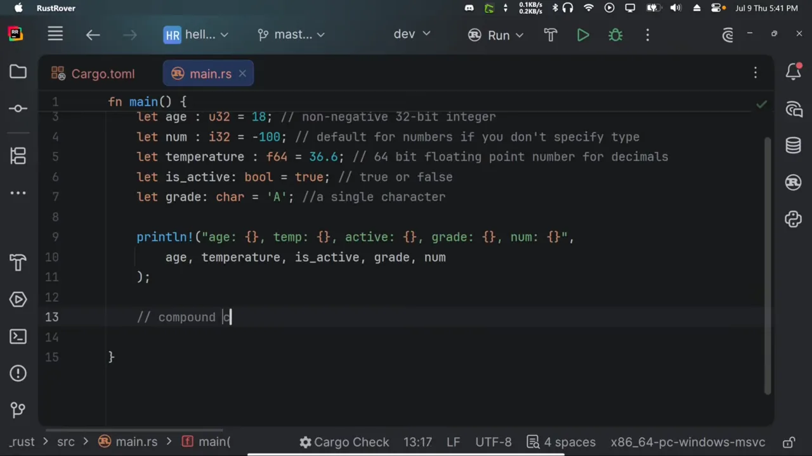
| 타입 | 담는 값 | 영상의 예 |
|---|---|---|
u32 | 음수가 없는 32비트 정수 | 나이 18 |
i32 | 음수도 되는 32비트 정수. 정수의 기본 타입 | -100 |
f64 | 64비트 소수 | 체온 36.6 |
bool | true 또는 false | is_active |
char | 글자 하나. 'ABC'처럼 여러 글자는 오류 | 학점 'A' |
타입을 안 적어도 Rust가 추론해 주고, RustRover는 추론한 타입을 회색 글씨로 보여 줘요. 그래도 발표자는 직접 적는 습관을 권해요. 여러 값을 출력할 때는 println! 문자열에 {}를 여러 개 두고, 쉼표 뒤에 변수를 같은 순서로 나열해요.
복합 타입: 튜플과 배열
아래 화면 16번째 줄이 튜플이에요. (&str, u32, u32) 세 타입에 맞춰 이름 "Maya", 나이 29, 급여 50000을 묶었어요. 꺼낼 때는 person.0, person.1, person.2처럼 점과 순번을 써요. 20번째 줄은 배열이에요. [i32; 3]은 'i32 세 개짜리'라는 뜻이고, scores[0]처럼 대괄호로 꺼내요.
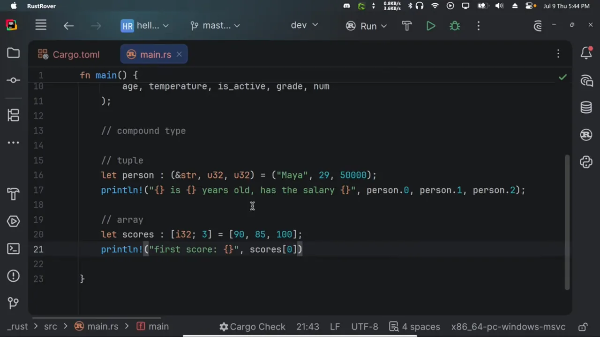
둘의 차이는 이래요. 튜플은 서로 다른 타입을 섞을 수 있고, 선언한 타입과 다른 값을 넣으면 바로 오류가 나요. 배열은 모든 원소의 타입이 같고 크기가 고정이에요. 다른 언어의 리스트에 가까운 건 배열이 아니라 뒤에 나오는 Vec이에요.
발표자는 말로 튜플이 '문자열'을 담는다고 하지만 화면의 타입은 String이 아니라 빌린 문자열 &str이에요. 둘의 차이는 '컬렉션' 섹션에서 다시 나와요.
함수와 제어 흐름: 세미콜론이 가르는 식과 문
함수와 조건문, 반복문은 다른 언어와 비슷해 보여요. 하지만 Rust만의 규칙이 하나 깔려 있어요. 세미콜론이 있느냐 없느냐로 '식'과 '문'이 갈리고, 식은 값을 돌려줘요.
매개변수에는 타입이 꼭 있어야 해요
fn greet(name)처럼 타입 없이 쓰면 오류가 나요. 모든 매개변수에 name: &str처럼 타입을 적어야 해요. 값을 돌려주는 함수는 괄호 뒤에 -> i32로 반환 타입을 적어요.
return 대신 세미콜론을 빼요
아래 화면 9~10번째 줄의 add 함수에는 return이 없어요. 마지막 줄 a + b 뒤에 세미콜론도 없어요. 옆 주석이 핵심이에요. 세미콜론 없는 줄은 식이고, 그 값이 자동으로 반환값이 돼요.
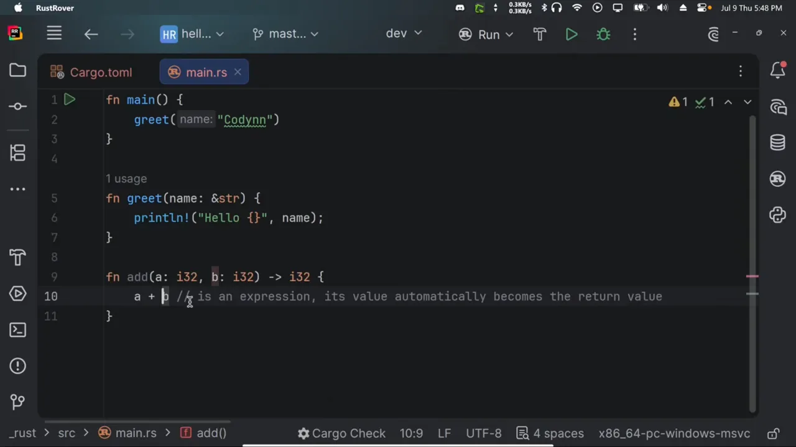
발표자는 일부러 a + b;로 세미콜론을 붙여 실행해요. 그러면 'expected i32, found ()' 오류가 나요. ()는 '아무것도 없음'을 뜻하는 빈 괄호예요. 다른 언어처럼 null을 돌려주는 대신 Rust는 이 빈 값을 써요. 세미콜론을 다시 빼고 println!("{}", add(10, 20))으로 출력하면 30이 나와요.
if도 값을 돌려주는 식이에요
조건에는 괄호를 쓰지 않고, 본문은 한 줄이어도 중괄호로 감싸야 해요. 그리고 if 자체가 식이라서 값을 바로 변수에 담을 수 있어요. 아래 화면 4번째 줄에서 "even"과 "odd" 뒤에 세미콜론이 없는 것도 같은 이유예요. 세미콜론을 붙이면 값이 반환되지 않아요.
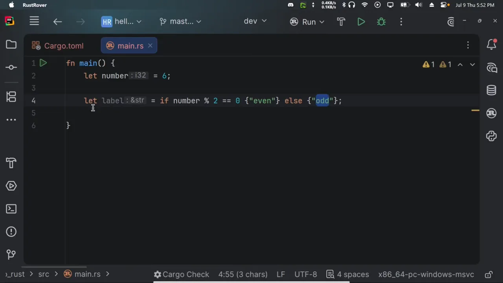
반복문 세 가지
첫째는 loop예요. 직접 break하기 전까지 끝없이 돌아요. 아래 화면에서는 counter를 1씩 올리다가 5가 되면 break counter * 2로 빠져나와요. break 뒤의 값이 그대로 loop의 결과가 되어 result에 10이 담겨요.
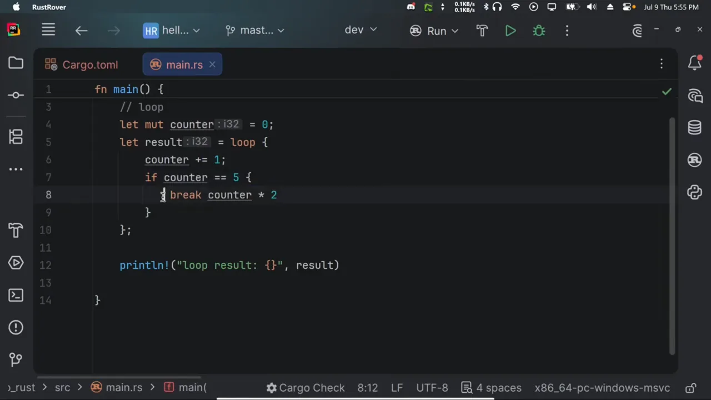
둘째는 while이에요. 조건이 참인 동안 돌아요. n을 3에서 시작해 1씩 줄이며 출력하고, 0이 되면 빠져나와 'liftoff!'를 찍어요. 실행 결과 맨 위의 'loop result: 10' 아래로 3, 2, 1, liftoff!가 차례로 보여요.
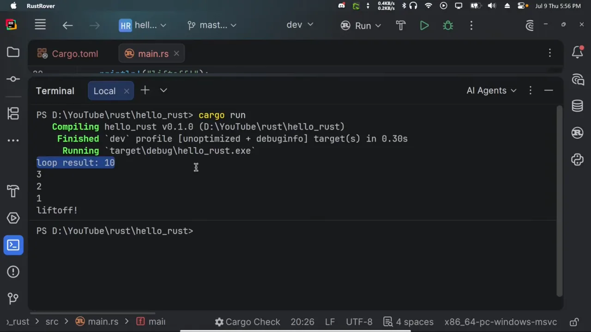
셋째는 for예요. 아래 화면 22번째 줄의 for i in 1..4는 1, 2, 3을 돌아요. 범위의 끝 값 4는 포함하지 않아요. 발표자는 Python의 range와 비슷하다고 해요. 26~28번째 줄처럼 for score in scores로 배열을 원소마다 한 번씩 훑을 수도 있어요.
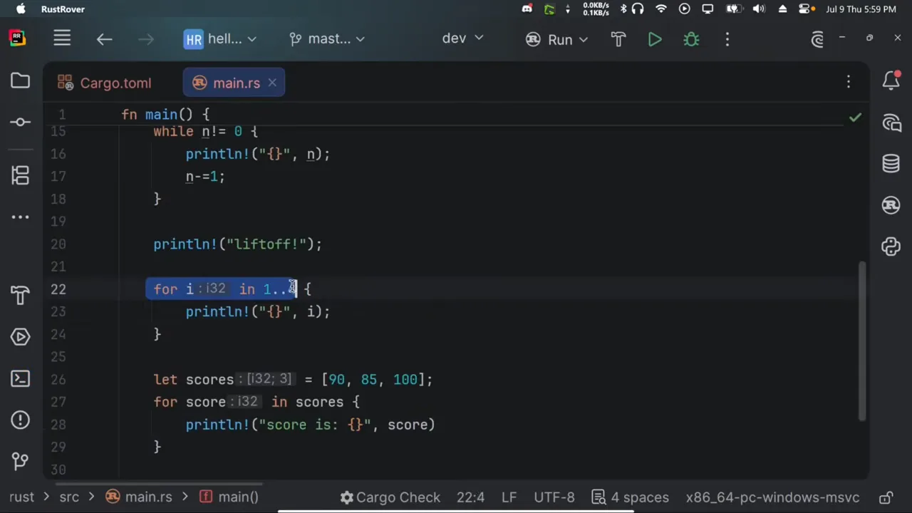
소유권과 빌림
발표자가 '모두가 겁내는 개념'이라고 부른 부분이에요. 질문은 하나예요. 이 힙 메모리의 주인은 누구인가요? Rust는 주인을 언제나 하나로 유지하고, 주인이 아닌 쪽은 잠깐 빌려 쓰게 해요.
대입하면 소유권이 옮겨가요
String::from("hello")는 힙에 놓이고 늘어날 수 있는 문자열을 만들어요. 이걸 let s2 = s1;로 넘긴 뒤 s1을 출력하려 하면 컴파일이 멈춰요. 아래 오류를 위에서부터 읽으면 이야기가 이어져요. s1의 타입 String은 Copy 트레이트를 구현하지 않아서 대입 때 이동이 일어나고('move occurs'), 3번째 줄에서 값이 옮겨졌는데('value moved here'), 5번째 줄에서 옮겨진 뒤의 값을 빌리려 했다('value borrowed here after move')는 거예요.
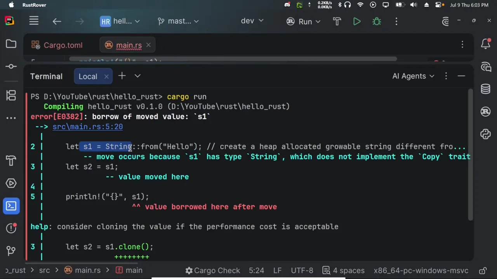
이 규칙이 막는 건 두 변수가 같은 메모리를 서로 자기 것으로 여기고 둘 다 해제하거나 바꾸는 버그예요. 정말 둘 다 필요하면 let s2 = s1.clone();으로 힙 데이터를 통째로 복제해요. 그러면 둘은 각자 자기 복사본의 주인이 되고, s2를 바꿔도 s1은 그대로예요. 발표자는 다른 언어가 숨기는 이 복제 비용을 Rust는 코드에 드러나게 한다고 강조해요.
함수에는 &로 빌려줘요
함수에 넘길 때도 같은 규칙이 적용돼요. 아래 화면의 calculate_length는 매개변수 타입이 &String이고, 부를 때도 calculate_length(&s1)처럼 앰퍼샌드를 붙여요. 문자열을 넘긴 게 아니라 빌려준 거라서 호출 뒤 5번째 줄에서 s1을 다시 출력할 수 있어요. 결과는 'The length of 'hello' is 5.'예요.
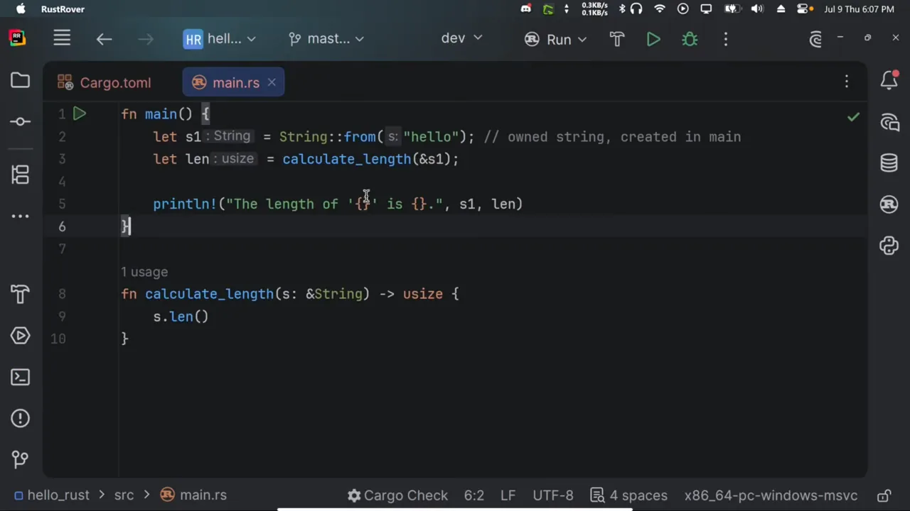
앰퍼샌드를 빼고 String을 그대로 넘기면 소유권이 함수로 옮겨가요. 그 뒤로 main에서는 s1을 출력하지도, 아무것도 하지 못해요. 잠깐 쓰기만 할 거라면 빌려주는 게 기본이에요.
가변 참조는 한 번에 하나만
빌린 값을 고치고 싶으면 &mut로 빌려요. 그런데 let r1 = &mut s;와 let r2 = &mut s;를 만들고 둘 다 출력하면 아래처럼 E0499 오류가 나요. 4번째 줄에 첫 번째 가변 빌림, 5번째 줄에 두 번째 가변 빌림, 7번째 줄에 첫 빌림이 아직 쓰이고 있다고 짚어 줘요.
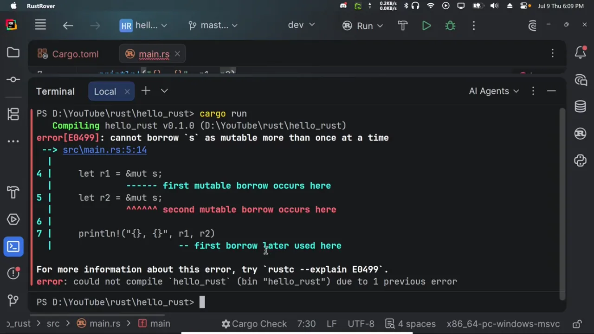
발표자는 이걸 'Rust가 데이터 경합을 프로그램이 돌기도 전에 막는 것'이라고 설명해요. 운영 중에 무언가 망가진 뒤가 아니라 컴파일할 때 잡는다는 거예요. 고치는 방법은 가변 참조의 범위가 겹치지 않게 하는 거예요. 아래 화면처럼 바꿀 일을 add_exclamation(text: &mut String) 함수에 맡기고 가변 참조 하나만 넘기면 돼요. 함수 안의 push_str("!")이 소유권을 가져가지 않고 문자열을 제자리에서 바꿔요.
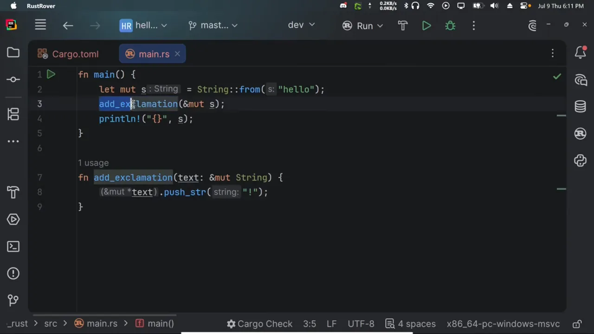
구조체와 열거형, match
여기서부터는 데이터를 내 모양대로 만드는 도구예요. 구조체는 여러 값을 이름 붙여 묶고, 열거형은 '여러 가능성 중 정확히 하나'를 표현해요. 그리고 match가 열거형의 모든 경우를 빠짐없이 다루게 강제해요.
구조체와 메서드
struct User는 username: String, age: u32, active: bool 세 필드를 하나의 타입으로 묶어요. 필드마다 타입은 달라도 묶인 값의 타입은 User 하나예요. 아래 화면 위쪽에서 user1을 만들고, 16번째 줄에서 user1.username처럼 점으로 필드를 꺼내 'codynn is 29 years old and is true'를 찍어요.
구조체를 통째로 찍으려면 맨 위에 #[derive(Debug)]를 붙이고 자리 표시자를 {:?}로 써야 해요. 이 속성이 디버그 출력 기능을 자동으로 만들어 줘요. 평범한 {}로는 구조체가 출력되지 않아요.
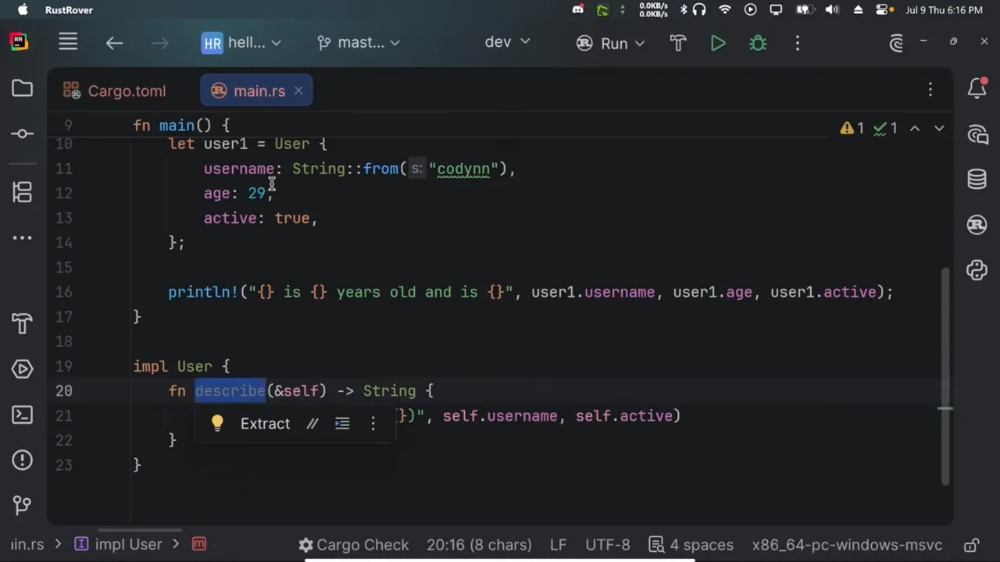
impl User 블록 안에 fn describe(&self) -> String을 넣으면 메서드가 돼요. user1.describe()로 부르면 self에 user1의 참조가 자동으로 들어가서 따로 넘길 필요가 없어요. 안에서는 format!으로 self.username과 self.active를 엮은 문자열을 만들어 돌려주고, 결과는 'codynn (active: true)'예요. 발표자는 JavaScript의 클래스와 객체에 빗대어 설명해요.
열거형과 match
enum TrafficLight는 Red, Yellow, Green 셋 중 정확히 하나예요. 아래 화면처럼 let light = TrafficLight::Red;를 만들고 match light로 갈래마다 할 일을 적어요. => 오른쪽이 그 갈래에서 실행할 코드(match arm)예요. 13번째 줄의 Green 갈래는 아직 'Stop'을 찍게 잘못 복사된 상태이고, 곧 'Go'로 고쳐요.
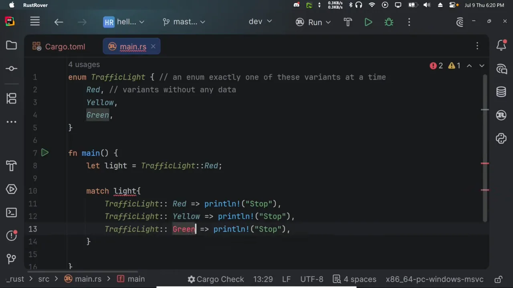
Green 갈래를 지우고 실행하면 아래 오류가 나요. 'Green ... not covered', 그리고 와일드카드 패턴이나 명시적 패턴으로 모든 경우를 처리하라는 help예요. 이 성질을 완전성 검사라고 해요. 발표자는 '석 달 뒤 누가 새 갈래를 추가하고 처리를 잊는 버그'가 이렇게 원천 차단된다고 말해요.
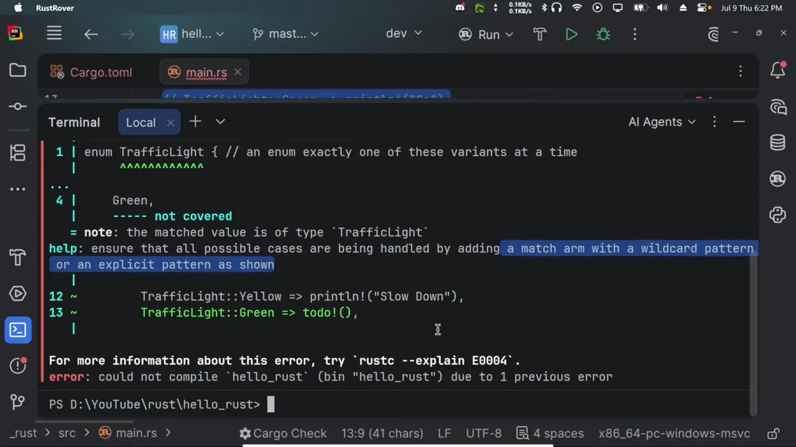
데이터를 품은 열거형
갈래가 값을 가질 수도 있어요. enum Shape { Circle(f64), Rectangle(f64, f64) }에서 원은 반지름 하나, 직사각형은 가로·세로 두 값을 가져요. 아래 화면의 area 함수 하나가 match shape로 원이면 3.14 * radius * radius, 직사각형이면 width * height를 계산해요. 함수를 도형마다 따로 만들 필요가 없다는 게 열거형의 장점이에요.
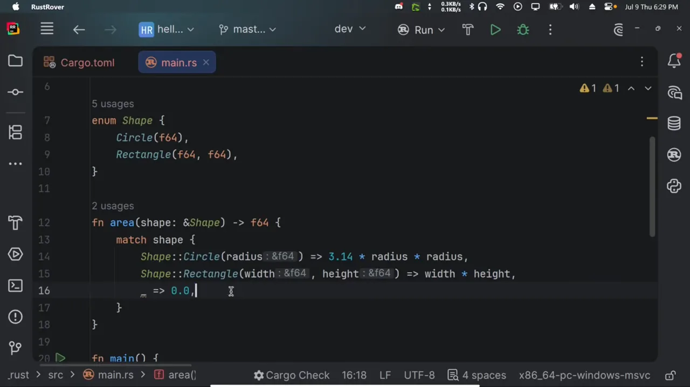
화면의 두 가지 손질에는 이유가 있어요. 처음에는 매개변수가 Shape여서 area(c)를 부른 뒤 c를 출력하려 하면 '이동된 값 사용' 오류가 났어요. 그래서 &Shape로 바꾸고 area(&c)로 빌려줘요. 소유권 규칙이 여기서도 그대로예요. 또 c를 {:?}로 찍으려고 Shape에도 #[derive(Debug)]를 붙였어요.
마지막 _ => 0.0은 '나머지 전부'를 받는 기본 갈래예요. 원과 직사각형만 있을 때는 도달할 수 없는 패턴이라는 경고가 나요. 발표자가 세 값을 갖는 Trapezoid를 새로 추가하자 이 갈래가 받아서 0을 돌려줘요. 아래 실행 결과의 'trapezoid area: 0'이 그거예요.
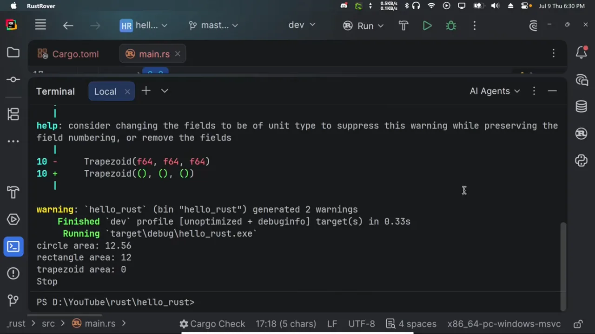
Option과 Result로 실패 다루기
Rust에는 null이 없어요. 값이 없을 수 있으면 Option, 실패할 수 있고 그 이유까지 알려야 하면 Result를 돌려줘요. 둘 다 앞에서 본 열거형이라 match로 모든 경우를 처리해야 해요.
Option: 값이 있거나, 없거나
아래 화면의 find_user는 반환 타입이 Option<String>이에요. id가 1이면 Some(String::from("codynn")), 아니면 None을 돌려줘요. main에서는 match result로 Some(name)이면 'Found codynn', None이면 'No user found'를 찍어요.
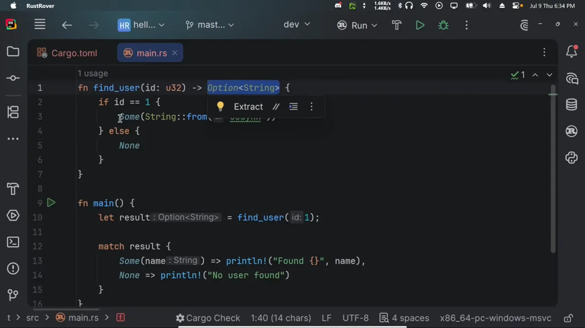
발표자의 표현으로는 '못 찾은 경우를 물리적으로 잊을 수 없다'예요. id를 2로 바꾸면 프로그램이 죽는 대신 None 갈래로 가서 'No user found'를 찍어요.
Result: 성공한 값이거나, 실패의 이유이거나
그런데 나눗셈이나 API 요청이라면 None만으로는 부족해요. 왜 실패했는지 알고 싶으니까요. 아래 화면의 divide는 Result<f64, String>을 돌려줘요. b가 0이면 Err(String::from("cannot divide by zero")), 아니면 Ok(a/b)예요. 꺾쇠 안의 첫 타입이 성공 값, 둘째 타입이 오류 값이에요.
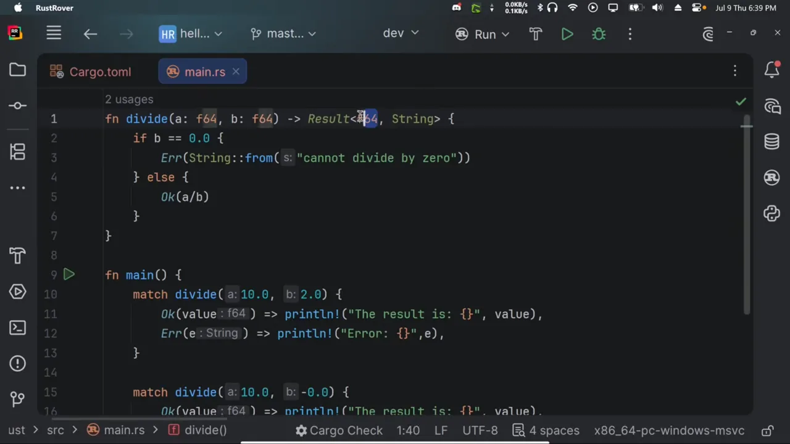
두 번째 호출의 인자는 화면상 -0.0이에요. 부동소수점에서 -0.0과 0.0은 같은 값으로 비교되기 때문에 b == 0.0이 참이 되어 똑같이 오류 갈래로 가요.
| Option<T> | Result<T, E> | |
|---|---|---|
| 성공 | Some(값) | Ok(값) |
| 실패 | None (이유 없음) | Err(오류 값) (이유를 담아요) |
| 영상의 예 | id로 사용자 찾기 | 0으로 나누기 막기 |
발표자는 Result를 'Option과 같은 모양이지만 오류의 내용을 실어 나르는 타입'이라고 정리해요. 성공과 실패를 둘 다 처리했는지는 부르는 쪽에서 컴파일러가 확인해요.
Vec, String, HashMap
표준 라이브러리의 컬렉션 세 가지를 다뤄요. 크기가 늘어나는 Vec, 소유하는 문자열 String, 키로 값을 찾는 HashMap이에요. 셋 모두에서 '읽기만 할 땐 빌린다'는 소유권 규칙이 계속 나와요.
Vec: 늘어나는 리스트
아래 화면 2번째 줄의 let mut scores: Vec<i32> = Vec::new();가 빈 벡터를 만들고, push로 90과 85를 끝에 붙여요. 배열은 mut로 선언해도 크기가 고정이라 원소를 더할 수 없다는 점이 달라요.
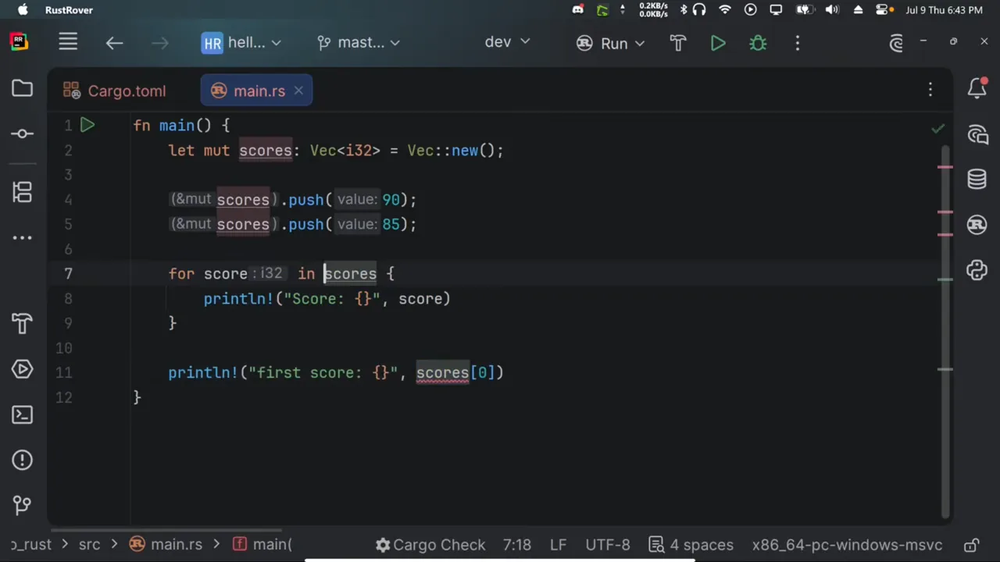
반복문을 for score in &scores로 쓴 게 핵심이에요. 벡터를 빌려서 읽기만 하니 소유권이 넘어가지 않아요. &를 빼고 for score in scores로 돌면 벡터가 반복문으로 이동해서 그 뒤에 scores[0]을 쓸 수 없어요. 원소는 배열처럼 대괄호로 꺼내요.
String과 &str
아래 화면 13~14번째 줄이 두 문자열 타입을 나란히 보여 줘요. let owned: String = String::from("hello");와 let borrowed: &str = "world";예요. 둘 다 출력하면 'hello, world'로 똑같아 보이지만 성격이 달라요.
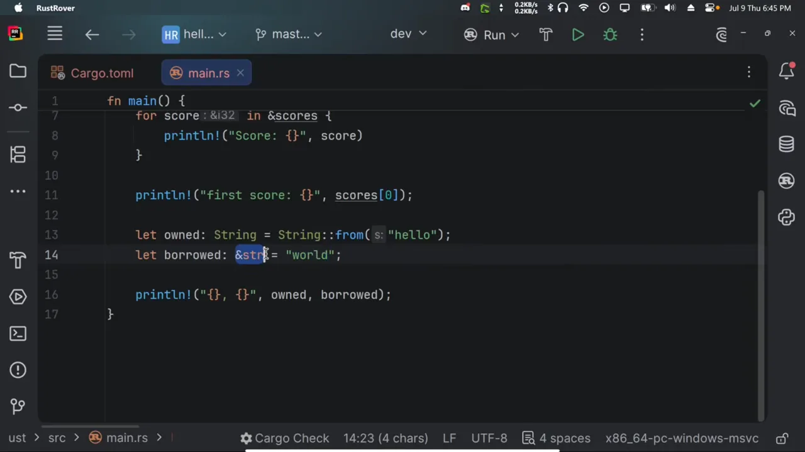
String | &str | |
|---|---|---|
| 성격 | 소유하고, 늘어날 수 있어요 | 문자열 데이터를 빌려 보는 창이에요 |
| 위치 | 힙 메모리 | "world" 같은 리터럴은 프로그램 안에 박혀 있어요 |
| 언제 쓰나요 | 텍스트를 소유하거나 만들어 갈 때 | 읽기만 할 때 |
HashMap: 키로 값을 찾아요
HashMap은 기본으로 들어 있지 않아서 use std::collections::HashMap;으로 표준 라이브러리에서 가져와요. 아래 화면에서 HashMap<String, u32>를 만들고, Vec의 push 대신 insert로 ("codynn", 29)와 ("academy", 49) 두 쌍을 넣어요.
꺼낼 때 쓰는 get은 키가 없을 수도 있으니 Option을 돌려줘요. 그래서 8번째 줄처럼 if let Some(age) = ages.get("codynn")으로 받아요. 값이 있을 때만 중괄호 안이 실행돼요. 12번째 줄의 for (name, age) in &ages는 Vec 때와 같이 빌려서 전부 훑어요.
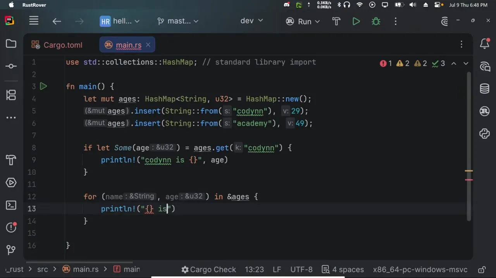
실행 결과는 세 줄이에요. 첫 줄 'codynn is 29'는 if let에서, 나머지 두 줄은 반복문에서 나왔어요. 발표자는 HashMap의 반복 순서가 배열처럼 보장되지 않는다고 덧붙여요.
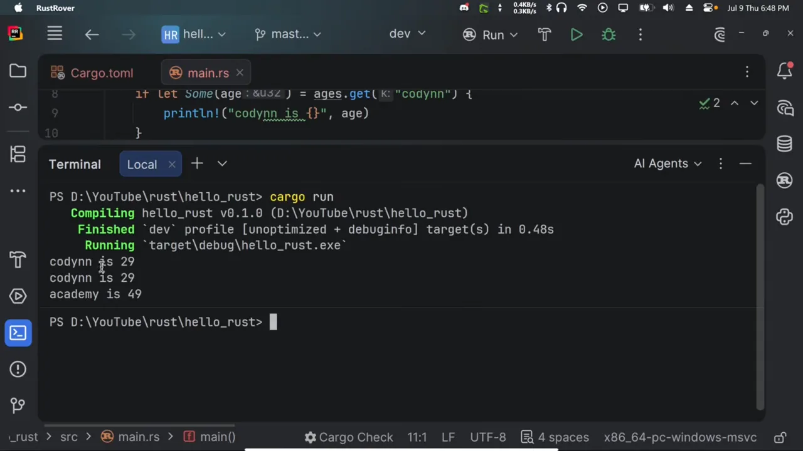
트레이트와 제네릭
마지막 주제는 같은 코드를 여러 타입에 쓰는 방법이에요. 제네릭은 함수 하나가 여러 타입을 받게 하고, 트레이트는 그 타입들이 갖춰야 할 능력을 정해요.
먼저 i32 전용 largest
아래 화면의 fn largest(list: &[i32]) -> i32는 정수 슬라이스에서 가장 큰 값을 찾아요. 첫 원소 list[0]을 일단 최댓값으로 두고, for &item in list로 돌면서 더 큰 값이 나오면 바꿔 끼워요. 첫 원소부터 시작하는 이유도 설명해요. 80, 20, 40, 10처럼 첫 값이 가장 클 때도 답이 맞게 나와요.
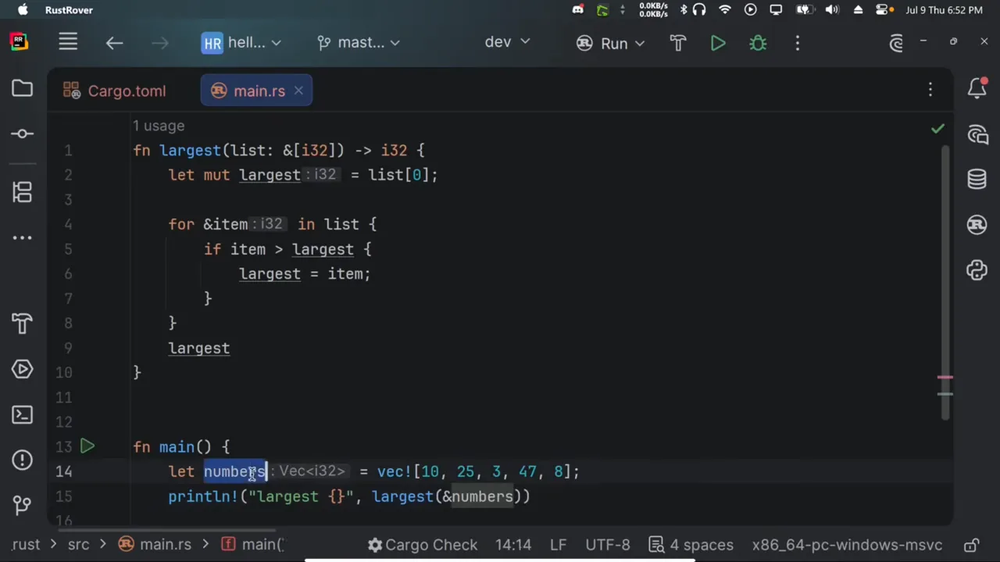
&[i32]는 슬라이스예요. 벡터나 배열의 일부 또는 전체를 빌려 보는 창이에요. 문제는 이 함수가 i32에만 쓸 수 있다는 거예요. 글자 목록에서 알파벳상 가장 뒤의 글자를 찾고 싶어도 쓸 수 없어요.
제네릭과 트레이트 바운드
아래 화면 1번째 줄이 바뀐 서명이에요. fn largest<T: PartialOrd + Copy>(list: &[T]) -> T예요. 함수 이름 뒤 꺾쇠에 타입 자리 표시자 T를 선언하고, i32가 있던 자리를 모두 T로 바꿨어요. 함수 몸통은 그대로예요.
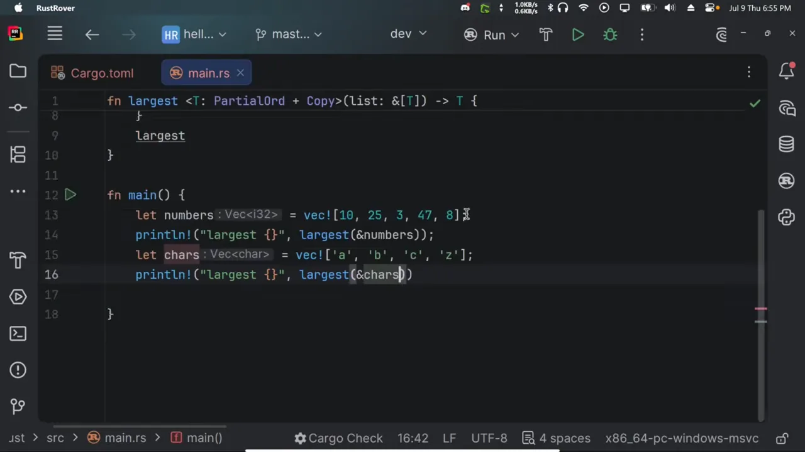
콜론 뒤의 PartialOrd + Copy가 트레이트 바운드예요. 'T는 어떤 타입이든 되지만, 크기 비교(>)가 되고 복사가 되는 타입이어야 한다'는 조건이에요. 함수 안에서 item > largest로 비교하고 list[0]을 꺼내 복사하니까 이 두 능력이 필요해요.
내 트레이트 만들기
트레이트는 직접 만들 수도 있어요. trait Summary { fn summarize(&self) -> String; }처럼 몸통 없이 서명만 적어요. 그리고 전혀 다른 두 구조체 Article(필드 headline)과 Tweet(필드 text)에 각각 impl Summary for ...로 몸통을 채워요. 아래 화면 13~23번째 줄이 그 두 구현이에요.
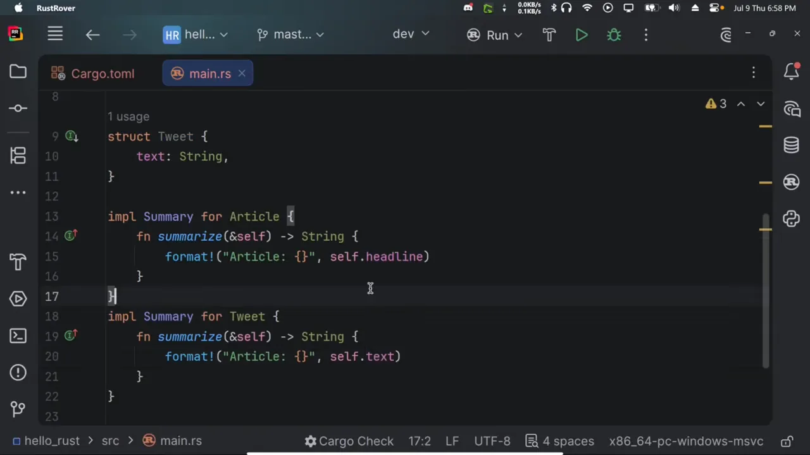
이제 main에서 article.summarize()와 tweet.summarize()를 같은 이름으로 불러요. 두 구조체가 같은 트레이트를 따르기 때문이에요. 부르는 쪽은 안에 headline이 있는지 text가 있는지 알 필요가 없어요. 아래 실행 결과가 두 줄을 보여 줘요.
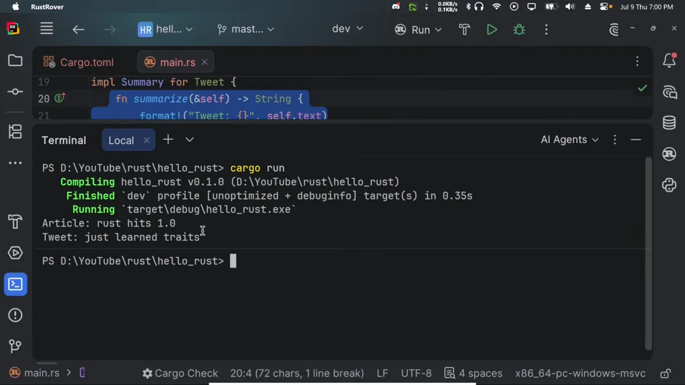
발표자도 이 정도 예제라면 article.headline을 직접 꺼내 쓰는 게 더 간단하다고 인정해요. 하지만 같은 형식을 코드 곳곳에서 백 번 써야 한다면, 이렇게 공통 인터페이스를 정해 두는 쪽이 훨씬 편하다는 게 결론이에요. 강좌는 '여기까지가 Rust 중급의 핵심'이라는 말로 끝나요.